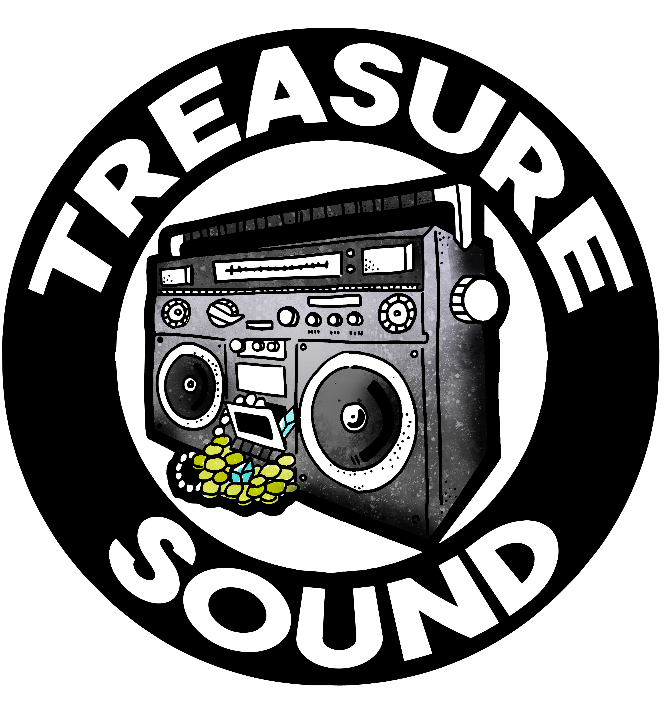

Based in Portland, Oregon, Treasure Sound Recording is the home studio and production suite of audio engineer Trevor Robinson. Whether you need help producing a rough demo into what you hear in your head, mixing a record for release, or building backing track rigs for your live shows, Trevor has the experience to bring your audio to life. Have a project in mind? Get in touch for availability—I’d love to hear what you’re working on!